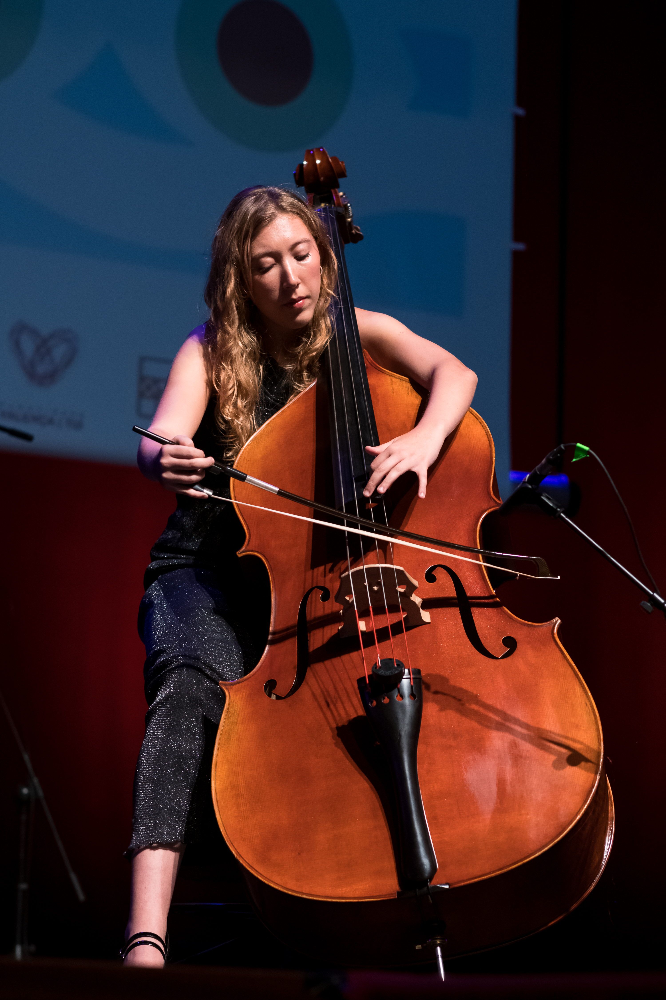
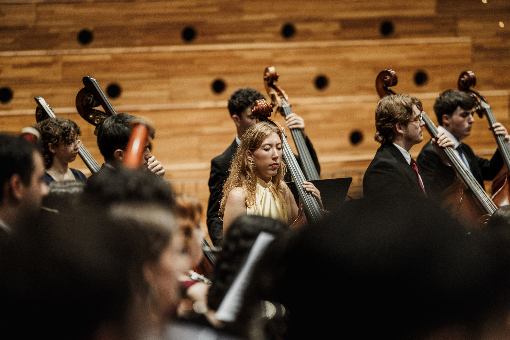
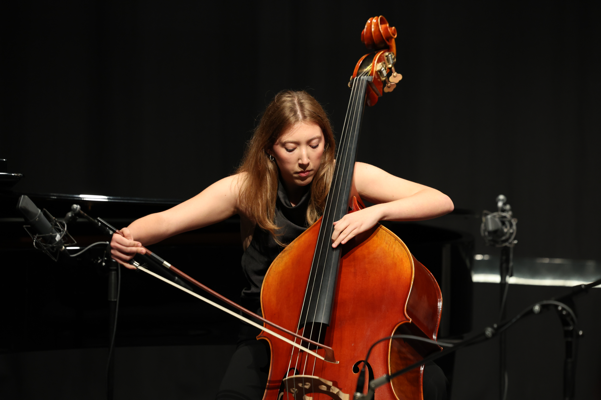
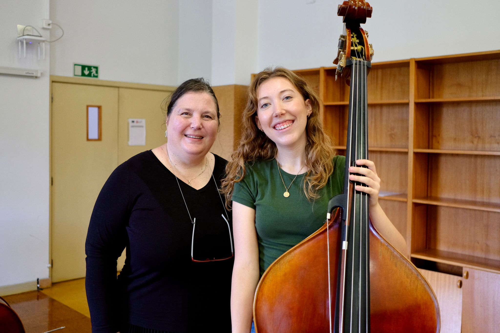
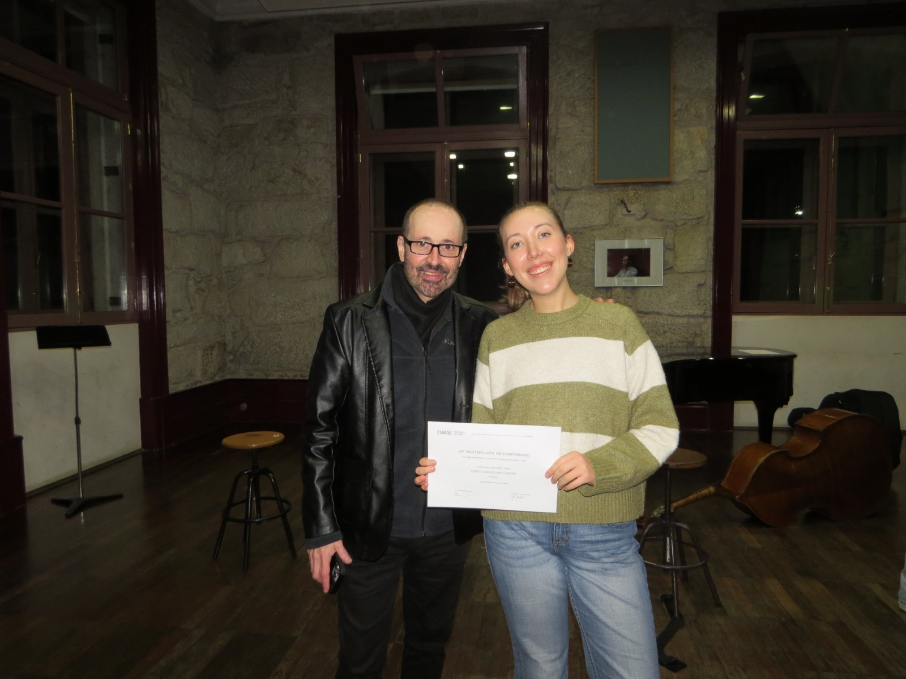
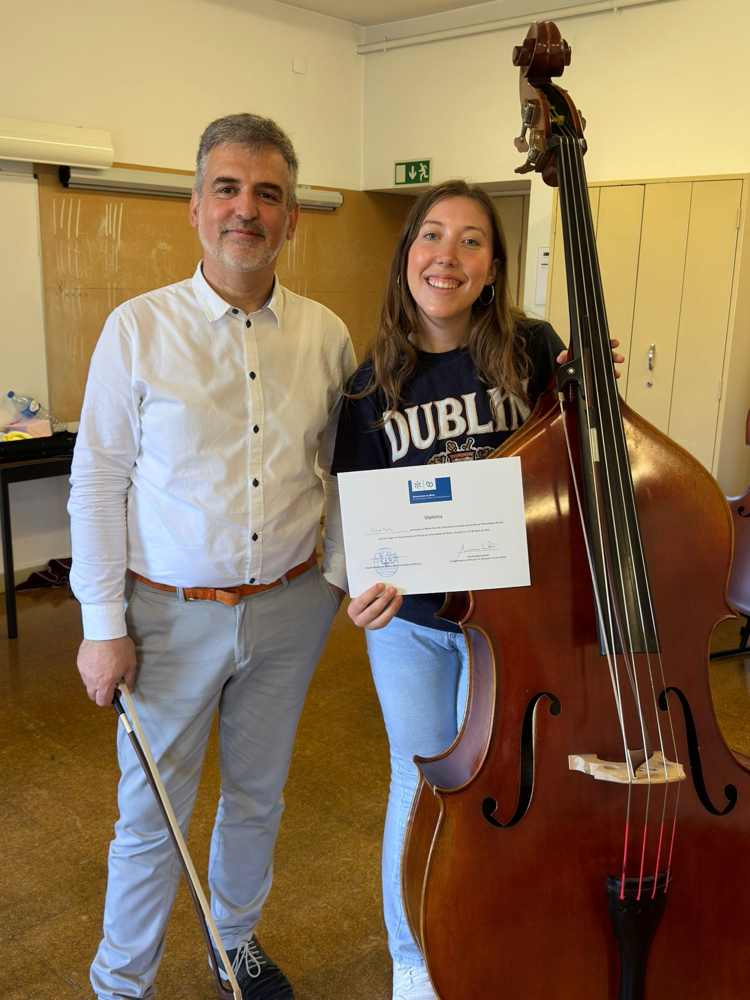
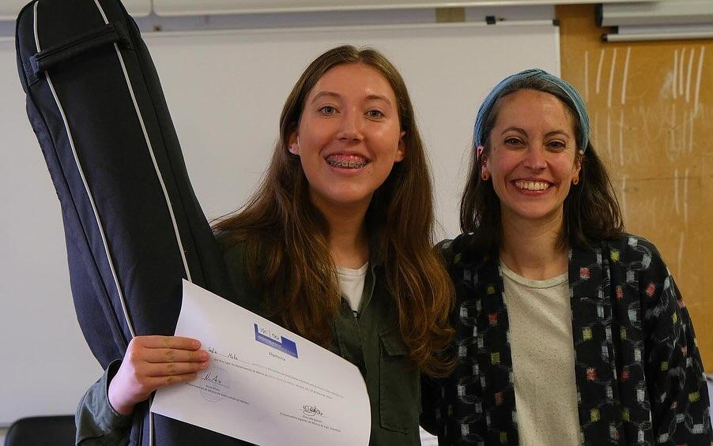
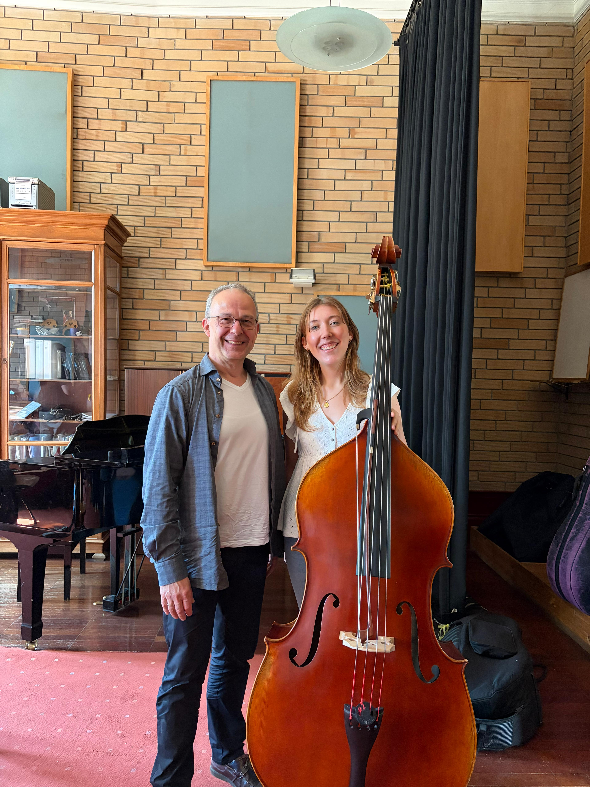

Novas Ondas Sonoras
IKFEM · Tui · 2026
My name is Sofia da Mata, and I am a second-year Bachelor’s student in Classical Music, specialising in double bass, at ESMAE in Porto, Portugal.
Through orchestral playing and contemporary music, I have learned to listen closely, respond to others and use sound to communicate with an audience. I want to bring that musical perspective to audio storytelling and learn how it can serve a narrative beyond the stage.
“As a musician, I believe that telling stories through sound is at the heart of what we do. Music is not simply about playing notes; it is about making people feel something, whatever that may be. For me, being a musician means both feeling and making others feel.”
This belief draws me to the European Audio Storytelling Exchange. I want to explore how music, voices, everyday sounds and silence can work together to create a narrative and connect with listeners.
From orchestras and contemporary music to competitions and masterclasses, these experiences have shaped how I listen, collaborate and communicate through sound.

IKFEM · Tui · 2026

AMYO · 2026

Casa da Música · 2026

Masterclass

Masterclass

Masterclass

Masterclass

Masterclass
I began my studies at ESMAE in Porto in 2025 and am now in the second year of my Bachelor’s degree in Classical Music. I also play piano, guitar and ukulele at an amateur level, and I am self-taught on the asalato.
In 2025 and 2026, I joined the Alto Minho Youth Orchestra under Miguel Sepúlveda, performing Mahler’s First and Second Symphonies. In 2025, I also accompanied cellist Marco Pereira with the orchestra.
I was invited to join the Orquestra Sinfónica Ensemble training project, performing at Coliseu do Porto and accompanying clarinettist João Sousa. I have been a member of Banda Musical de Gondomar since January 2025, performing with artists including Sérgio Godinho and Rúben Simeó.
In 2026, I was accepted into the Orquestra Académica Filarmónica Portuguesa.
I was invited by ESMAE to join its double bass ensemble at the 2024 Encontro Nacional de Contrabaixo, performing Emil Tabakov’s Lamento for 12 Double Basses.
I have also taken part in Ópera na Academia e na Cidade, performed with the Orquestra Portuguesa de Guitarras e Bandolins alongside singer Anabela, and joined the Orquestra Filarmónica de Braga for its New Year concert under Filipe Cunha.
With Cluster, part of the Orquestra de Jazz de Matosinhos educational programme, I have performed the group’s original contemporary music at Serralves em Festa and Casa da Arquitetura.
I have worked under conductors including Miguel Sepúlveda, José Eduardo Gomes, Dinis Sousa, Diogo Costa, Cesário Costa, Filipe Cunha, Rúben Castro, Jan Wierzba, Pedro Carneiro, José Ferreira Lobo and Bogdan Vodă.
In 2026, I reached the elimination round of Prémio Jovens Músicos at Casa da Música and was a finalist in Novas Ondas Sonoras at IKFEM Tui-Valença. I also participated in the Vasco Barbosa string competition in 2025.
My masterclasses include work with Catalin Rotaru, Nuno Arrais, Domingos Ribeiro, Sérgio Barbosa, Elena Marigómez, Jaime Álvarez, Massimiliano Rizzoli, Florian Pertzborn, Marcos Machado, Tobias Glöcker and Daniela Georgieva.
I hold a British Council English C1 qualification and have studied German at A1 level. I have performed at venues including Casa da Música, Coliseu do Porto, Teatro Constantino Nery and Theatro Circo.
The European Audio Storytelling Exchange offers a chance to explore sound beyond musical performance. I am especially interested in learning how voices, everyday sounds, silence and music can create narrative, atmosphere and character, and how these elements can be used in documentary audio.
I would bring the listening and ensemble skills developed through orchestral and contemporary music, as well as curiosity and openness to unfamiliar formats. I look forward to sharing ideas, experimenting hands-on and learning from people with different artistic and cultural backgrounds as we develop audio work together.
Sofia da Mata · Double bass
Get in touch ↗